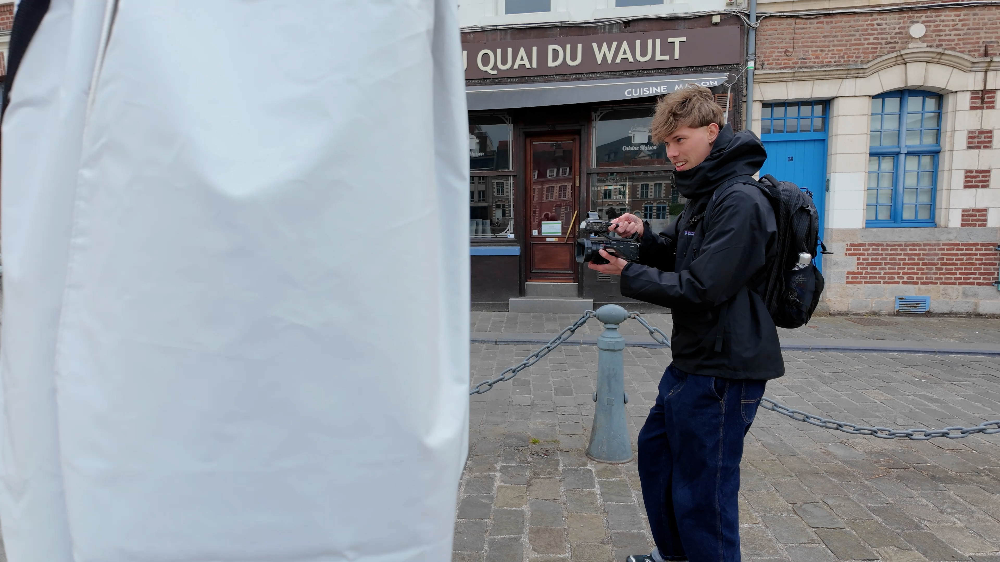

3 jours enfermé dans un lieu hanté
Le Grand JD · YouTube
J'aime raconter des histoires, donner vie aux images et créer des vidéos qui captent l'attention. Bienvenue dans mon univers.

Des personnes, des médias et des entreprises avec lesquels j'ai eu le plaisir de collaborer.
 Passion Nord
29,5 k abonnés
Passion Nord
29,5 k abonnés
 Goût du Nord
À compléter
Goût du Nord
À compléter
 Nord Sports 360
À compléter
Nord Sports 360
À compléter
 Made in Nord
À compléter
Made in Nord
À compléter
Une collaboration en tête ? Parlons-en.
Aller sur le terrain, rencontrer, comprendre et raconter. Des sujets qui mettent en lumière des histoires et des personnes.
Reportages, interviews et sujets de terrain.
Projets à découvrir prochainementDes idées, des essais et des créations personnelles. Un espace pour expérimenter et laisser parler sa créativité.
Des projets qui me ressemblent.
Projets à découvrir prochainement